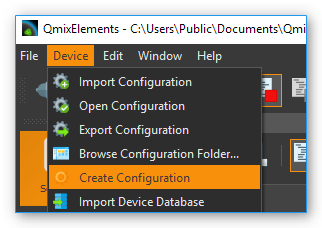

Erstellen von Gerätekonfigurationen
Einleitung
Um einzelne Geräte oder komplette Systeme bestehend aus mehreren Einzelgeräten in CETONI Elements zu benutzen, müssen Sie eine Gerätekonfiguration erstellen. Hierfür verwenden Sie den Gerätekonfigurator, welcher in CETONI Elements integriert ist. Der Gerätekonfigurator enthält einen Konfigurationsassistenten, der Sie bei der Konfiguration ihrer Geräte unterstützt.
Aufruf des Gerätekonfigurators
Sie starten den Gerätekonfigurator durch Auswahl des Menüpunktes im Hauptmenü.
Um den Gerätekonfigurator zur Konfiguration Ihrer Geräte zu verwenden, muss eine gültige Lizenz installiert sein. Wenn Sie keine Lizenz besitzen, können Sie die Erstellung von Gerätekonfigurationen testen, sie können ihre Geräte aber nicht mit Hilfe des Konfigurationsassistenten ❶ konfigurieren. Eine nicht aktivierte Software-Version erkennen Sie an einer Warnmeldung in der Statusleiste des Gerätekonfigurators ❷ (siehe Abbildung unten).
Wichtig
Wenn Sie Ihre echten Geräte konfigurieren möchten, aktivieren Sie Ihre Lizenz, bevor Sie den Gerätekonfigurator starten. Eine Anleitung dazu finden Sie im Kapitel Lizenzen aktivieren.
Importieren einer Gerätedatenbank
Der Gerätekonfigurator und der Konfigurationsassistent verwenden eine
Gerätedatenbank (devices.db) aus denen die gerätespezifischen
Parameter für die Konfiguration der Geräte auslesen werden. Bei der
Installation der CETONI Elements Software wird diese Gerätedatenbank
bereits installiert.
Wenn Sie Geräte verwenden, die noch nicht in der Gerätedatenbank enthalten sind, müssen Sie ggf. eine aktuellere Version der Gerätedatenbank importieren. Diese finden Sie entweder auf Ihrem Installationsdatenträger oder Sie erhalten Sie direkt von CETONI.
Beim Start des Gerätekonfigurators, werden Sie gefragt, ob Sie eine neue
Gerätedatenbank importieren möchten. Wenn auf Ihrem
Installationsdatenträger die Datei devices.db enthalten ist, sollten
Sie diese importieren.
Tipp
Wenn keine Gerätedatenbank auf dem Installationsdatenträger vorhanden ist, wird ihr Gerät bereits durch die CETONI Elements Software unterstützt und Sie können den Import überspringen.
Bestätigen sie die Abfrage durch Linksklick auf die Schaltfläche Yes.

Es öffnet sich ein Dateidialog. Wählen sie die Datenbankdatei
devices.db, die sich im Wurzelverzeichnis der mitgelieferten CETONI Elements CD befindet (siehe Abbildung unten).
Der Gerätekonfigurator verfügt jetzt über eine aktuelle Gerätedatenbank.
Wichtig
Die Gerätedatenbank enthält wichtige Konfigurationsinformationen über ihre Geräte. Sie müssen immer dann eine aktuelle Gerätedatenbank importieren, wenn sie ein neues Gerät der cetoni GmbH erwerben.
Solange sie keine neuen Geräte erwerben, müssen sie nicht bei jedem Start des Gerätekonfigurators eine Gerätedatenbank importieren. Wenn Sie nicht möchten, dass CETONI Elements sie weiter nach einer Gerätedatenbank fragt, setzen sie den Haken bei Do not ask me again und klicken sie auf die Schaltfläche No (siehe Abbildung unten).

Wenn sie zukünftig eine Gerätedatenbank importieren möchten, erreichen sie den Import-Dialog über den Menüpunkt des Hauptmenüs (siehe Abbildung unten).
Tipp
Sie müssen nicht bei jedem Start des Gerätekonfigurators eine Gerätedatenbank importieren. Solange sie keine neuen Geräte erwerben, müssen Sie kein neue Gerätedatenbank importieren.
Übersicht
Der Gerätekonfigurator ist in folgende drei Bereiche untergliedert:
Toolbar – Funktionen zum Anlegen, Laden und Speichern von Konfigurationen, sowie zum Starten des Konfigurationsassistenten
Device List – Auswahl aller konfigurierbaren Geräte
Device configuration – individuelle, vom Nutzer erstellte Gerätekonfiguration
Die Werkzeugleiste
Die Werkzeugleiste enthält folgende Funktionen:
|
Erstellt eine neue, leere Gerätekonfiguration. |
|
Lädt eine vorhandene Gerätekonfiguration. |
|
Speichert die erstellte Gerätekonfiguration. |
|
Speichert die erstellte Gerätekonfiguration unter einem neuen Namen. |
Setzt alle Geräte der Konfiguration als simulierte Geräte. |
|
|
Startet den Dialog für die Auswahl von Add-On-Plugins. Es handelt sich dabei um optionale Erweiterungen der Software, die CETONI, unter Umständen in Ihrem Auftrag, kundenspezifisch entwickelt hat. |
|
Startet den Konfigurationsassistenten. |
|
Startet die Software mit der Gerätekonfiguration die im Gerätekonfigurator aktiv ist |
{kind=link}
Der Konfigurationsassistent

Der Konfigurationsassistent unterstützt Sie bei der Integration ihrer Geräte in ihre spezifische Gerätekonfiguration. Sie müssen ihn immer dann ausführen, wenn Sie:
eine Gerätekonfiguration neu erstellen oder ändern.
Ein Gerät einer vorhanden Konfiguration tauschen oder ein neues Gerät einbinden.
Ihre CETONI Elements Software aktualisiert haben.
Wichtig
Konfiguration und Geräte gehören zusammen. Führen sie den Konfigurationsassistenten immer aus, wenn sie eine Konfiguration ändern oder ein anderes Gerät in eine vorhandene Konfiguration einbinden wollen.
Ihre Gerätekonfiguration sollte stets mit der Softwareversion erstellt worden sein, mit der Sie die Konfiguration verwenden möchten, da es sonst unter Umständen zu Fehlern kommen kann. Wenn die Gerätekonfiguration mit einer anderen Softwareversion erstellt wurde, erhalten Sie beim Start der Anwendung einen Warnhinweis.

Wenn Sie diese Warnung sehen, sollten Sie die Gerätekonfiguration im Gerätekonfigurator öffnen, speichern und dann alle Geräte mit dem Konfigurationsassistenten konfigurieren.
Erstellung einer Beispielkonfiguration
Im folgenden Beispiel wird die Erstellung einer Gerätekonfiguration bestehend aus einem Nemesys s Dosiermodul und einem Qmix Q+ Modul erklärt.
Starten sie den Gerätekonfigurator wie in Abschnitt Aufruf des Gerätekonfigurators beschrieben.
Klicken sie mit der linken Maustaste auf die Nemesys S Spritzenpumpe in der Geräteliste ❶ und halten sie diese gedrückt.
Ziehen sie die Nemesys S Pumpe mit gedrückter Maustaste in die Gerätekonfiguration ❷. Sobald sie die Maustaste loslassen, wird die Pumpe in die Konfiguration eingefügt. Alternativ können Sie ein Gerät auch hinzufügen, indem Sie es in der Geräteliste doppelt anklicken.
Tipp
Sie können Geräte via Drag & Drop oder durch Doppelklick hinzufügen.

Tipp
Sie können Geräte aus der Gerätekonfiguration entfernen, indem Sie das Gerät durch Anklicken auswählen und dann die Entfernen Taste drücken.
Verfahren Sie auf gleiche Weise mit dem Qmix Q+ Modul.
Speichern Sie Ihre Konfiguration jetzt unter einem aussagekräftigen Namen ab durch Klick auf Sie Schaltfläche Save ❸.
Starten sie durch Klicken mit der linken Maustaste auf die Schaltfläche Configure ❹ den Konfigurationsassistenten .
Achtung
Schalten Sie das Basismodul immer aus, bevor Sie Geräte entfernen oder anstecken um Schaden an den Geräten zu vermeiden.
Der Konfigurationsassistent fordert sie nun auf, folgende Schritte durchzuführen:
Schließen Sie die Nemesys S Pumpe an das Basismodul an.
Schalten Sie den Power Schalter der Nemesys S Pumpe in die ON-Stellung.
Schalten Sie den Power Schalter von allen anderen Geräten die am Basismodul angeschlossen sind aus.
Entfernen Sie alle Geräte vom Basismodul, die nicht über einen Schalter verfügen um sie auszuschalten – das wäre in diesem Fall das Qmix Q+ Modul (Schalten Sie das Basismodul aus, bevor Sie Geräte entfernen und anstecken).
Stecken sie den Busterminator auf das letzte Modul in Ihrem System – die Nemesys S Pumpe.
Schalten Sie das Basismodul wieder ein.
Überprüfen Sie, dass die Nemesys S Pumpe, welche Sie konfigurieren möchten, das einzige Modul, welches nun eingeschaltet ist. Während der Konfiguration des Moduls, dürfen sich keine anderen eingeschalteten Geräte am Basismodul befinden.

Wichtig
Während der Konfiguration eines Gerätes dürfen Siech keine anderen eingeschalteten Geräte am Basismodul befinden, da es ansonsten zu Fehlern bei der Konfiguration oder zu späteren Fehlfunktionen kommen kann.
Klicken sie mit der linken Maustaste auf die Schaltfläche Next um fortzufahren.
Die Nemesys S Pumpe wird konfiguriert. Dies kann einige Sekunden dauern.

Der Konfigurationsassistent zeigt Ihnen die erfolgreiche Konfiguration der Nemesys S Pumpe an. Klicken sie mit der linken Maustaste auf die Schaltfläche Next um fortzufahren.
Der Konfigurationsassistent fordert sie auf, folgende Schritte zu tätigen:
Verbinden Sie das Qmix Q+ Modul mit Ihrem Basismodul (Schalten Sie das Basismodul aus, bevor Sie Geräte entfernen und anstecken).
Schalten Sie den Power Schalter von allen anderen Geräten die am Basismodul angeschlossen sind aus – das wäre in diesem Fall die Nemesys S Pumpe. Alternative können Sie auch die Nemesys S Pumpe vom Basismodul entfernen und nur das Qmix Q+ Modul anschließen.
Entfernen Sie alle Geräte vom Basismodul, die nicht über einen Schalter verfügen um sie auszuschalten.
Stecken sie den Busterminator auf das letzte Modul in Ihrem System.
Schalten Sie das Basismodul wieder ein.
Überprüfen Sie, dass das Qmix Q+ Modul das einzige Modul ist welches nun eingeschaltet ist. Während der Konfiguration des Moduls, dürfen sich keine anderen eingeschalteten Geräte Basismodul befinden.

Klicken Sie Next, um das QmixQ+ Modul zu konfigurieren.
Setzen sie auf der folgenden Seite mit der linken Maustaste das Häkchen neben Import and activate new device configuration into CETONI Elements now. Auf diese Weise aktiviert CETONI Elements die neue Gerätekonfiguration und startet nach dem Beenden des Konfigurationsassistenten neu.

Bereiten sie den Neustart von CETONI Elements mit der erstellten Konfiguration vor:
Schalten sie das Basismodul aus.
Verbinden Sie die Nemesys S Pumpe und das Qmix Q+ Modul mit dem Basismodul.
Stecken sie den Busterminator an.
Schalten sie das Basismodul wieder ein.
Schalten Sie den Power Schalter der Nemesys S Pumpe ein
Schließen sie den Konfigurationsassistenten durch Betätigen der Schaltfläche Finish ab.

Bestätigen sie den Neustart der Software mit der neuen Konfiguration.

CETONI Elements steht Ihnen nun mit den Funktionen der Nemesys S Pumpe und des Qmix Q+ Moduls zur Verfügung.
Erweitern einer vorhandenen Konfiguration
Im folgenden Beispiel wird gezeigt, wie sie die im vorangegangenen Abschnitt erzeugte Konfiguration bestehend aus einem Nemesys S Dosiermodul und einem Qmix Q+ Modul um ein weiteres Gerät erweitern können.
Starten sie den Gerätekonfigurator wie in Abschnitt Aufruf des Gerätekonfigurators beschrieben.
Nach dem Start des Gerätekonfigurators wird die Konfiguration angezeigt, die momentan durch die CETONI Elements Software geladen wurde. Die grünen Haken über den Geräten bedeuten ihnen, dass die Geräte bereits konfiguriert wurden.

Möchten Sie eine andere Konfiguration als die, die derzeit von der CETONI Elements Software geladen wurde, ändern, müssen sie diese über die Schaltfläche Open in der Werkzeugleiste aufrufen.

Fügen Sie, wie im vorangegangenen Abschnitt beschrieben, ein weiteres Gerät durch Drag & Drop hinzu. Das Ausrufezeichen über dem neuen Gerät zeigt Ihnen, dass das Gerät noch nicht konfiguriert wurde. Die Konfiguration ist in diesem Zustand noch nicht verwendbar.
Wichtig
Beinhaltet eine Gerätekonfiguration nicht konfigurierte Geräte, dann ist sie (noch) ungültig und kann nicht verwendet werden.
Starten sie den Konfigurationsassistenten durch Anklicken der Schaltfläche Configure.

Wenn die Software bereits mit den angeschlossenen Geräten verbunden wurde, dann kann der Konfigurationsprozess nicht fortgesetzt werden. In diesem Fall schlägt ihnen der Konfigurationsassistent vor, die Software und den Gerätekonfigurator automatisch neu zu starten. Klicken sie auf die Schaltfläche Yes, wenn sie den Konfigurationsprozess fortsetzen möchten.
Es startet der aus dem vorangegangenen Abschnitt bekannte Konfigurationsablauf. Auf der zweiten Seite schlägt ihnen der Assistent diesmal jedoch vor, bereits konfigurierte Geräte vom Konfigurationsprozess auszuschließen. Setzen sie den Haken neben Skip configured devices.

Der Konfigurationsassistent fährt nun direkt mit der Konfiguration des neu hinzugefügten Gerätes (im Beispiel Qmix P) fort.

Führen sie den Konfigurationsablauf auf die gleiche Weise wie beim Neuerstellen einer Konfiguration zu Ende.
Nach dem Neustart der Software steht Ihnen nun auch die Funktionalität des neuen Gerätes zur Verfügung.
Konfiguration eines einzelnen Gerätes
Sie können im Gerätekonfigurator auch jederzeit nur ein einzelnes Gerät aus Ihrer Konfiguration konfigurieren – z.B. wenn Sie ein defektes Gerät gegen ein neues getauscht haben. Klicken Sie dazu einfach mit der rechten Maustaste auf das Gerät, welches konfiguriert werden soll und wählen Sie den Menüpunkt .

Der Konfigurationsassistent führt Sie nun durch die Konfiguration des einzelnen Gerätes.
Simulierte Geräte
Sie können einzelne Geräte oder eine vollständige Gerätekonfiguration simulieren. Dies ist sinnvoll, wenn sie beispielsweise Skripte programmieren und hierbei Geräte benutzen möchten, die Ihnen momentan nicht zur Verfügung stehen. Die Demo-Konfiguration der CETONI Elements-Software, zum Beispiel, besteht vollständig aus simulierten Geräten. Um ein einzelnes Gerät zu simulieren gehen Sie wie folgt vor.
Klicken Sie mit der rechten Maustaste auf das Gerät, das sie simulieren möchten.
Klicken sie mit der linken Maustaste auf die Schaltfläche Simulate.

Das Gerät wird hierauf als simuliertes Gerät gekennzeichnet. Speichern Sie die Konfiguration. Wenn Sie CETONI Elements das nächste Mal mit dieser Gerätekonfiguration laden, wird Ihnen das Gerät als simuliertes Gerät zur Verfügung stehen.

Eine gesamte Gerätekonfiguration simulieren Sie, indem sie die Schaltfläche Simulate All in der Hauptwerkzeugleiste mit der linken Maustaste anklicken.
Optionale Add-On-Plugins
Es gibt optionale Erweiterungen der Software, die CETONI, unter Umständen in Ihrem Auftrag, kundenspezifisch entwickelt hat. Gegebenenfalls werden bestimmte Plugins für eine bestimmte Gerätekonfiguration aber gar nicht benötigt, bzw. sind hierfür gar nicht geeignet. Beim Erstellen und Bearbeiten einer Gerätekonfiguration können Sie frei konfigurieren, welche optionalen Plugins mit Ihrer Gerätekonfiguration geladen werden sollen.
Tipp
Die Software CETONI Elements kann um kundenspezifische Plugins erweitert werden. Sprechen Sie uns bitte an, sollten Sie eine spezifische Anpassung der Softwarefunktionalität benötigen.
Wenn Sie lediglich eine Standard-CETONI Elements-Version installiert haben, werden keine optionalen Add-On-Plugins verfügbar sein. Dementsprechend ist die Funktion für die Konfiguration von optionalen Add-On-Plugins deaktiviert (siehe Abbildung unten).

Haben Sie ein CETONI Elements-Add-On installiert, welches optionale Plugins enthält, ist diese Funktion verfügbar (siehe Abbildung unten).
Wichtig
Nicht jedes CETONI Elements-Add-On enthält optionale Plugins. Viele Add-Ons (z.B. Spectroscopy Add-On) enthalten ausschließlich obligatorische Plugins, die geladen werden müssen, um die Gerätefunktionalität bereitzustellen. Obligatorische Plugins können über diese Funktion nicht ausgewählt werden. Diese werden automatisch immer geladen, wenn das jeweilige Gerät (z.B. Qmix λ) konfiguriert wurde.
Wenn Sie mit der linken Maustaste auf die Funktion Add-On Plugins klicken, erscheint der Auswahldialog für Add-On-Plugins. In der unteren Hälfte des Dialogs befindet sich eine Tabelle, in der alle verfügbaren optionalen Add-On-Plugins angezeigt werden (siehe Abbildung unten).
Sie können sich Informationen über das Add-On-Plugin anzeigen lassen, indem Sie mit der Maus über den jeweiligen Tabelleneintrag fahren (siehe Abbildung unten).

Um ihrer Gerätekonfiguration ein optionales Add-On-Plugin hinzuzufügen, markieren Sie das Feld neben dem Plugin ❶ und klicken anschließend auf Ok ❷. Zum Abschluss müssen Sie die Konfiguration speichern ❸, um die Änderungen dauerhaft zu übernehmen (siehe Abbildung unten).